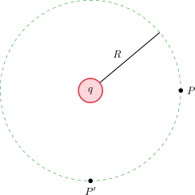
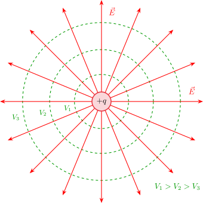
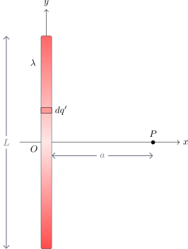
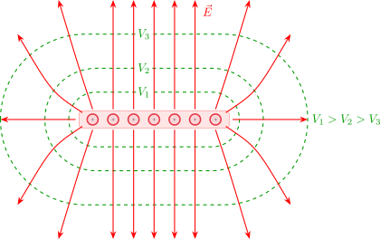
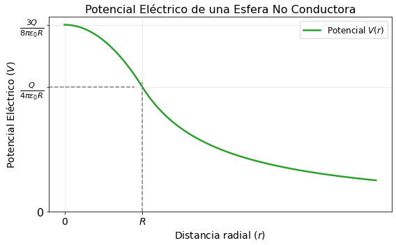
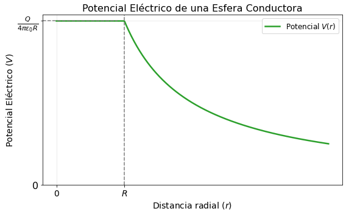

3.2 Cálculo del Potencial Eléctrico#
Partiendo de la relación matemática del gradiente para el vector de posición:
Potencial eléctrico para una distribución continua#
Para una distribución de carga continua el campo eléctrico se expresa inicialmente como:

Reemplazando la identidad del gradiente obtenida previamente:
Dado que \(\vec{E} = -\vec{\nabla}V\), de aquí se define el potencial eléctrico \(V\) para una distribución continua como:
Potencial eléctrico para una carga puntual#

Para una carga puntual la expresión del potencial eléctrico se simplifica a:
Ejemplo 1: Potencial en P debido a una carga q#
Para un punto \(P\) (y un punto simétrico \(P^{\prime}\)) ubicado a una distancia \(R\) de una carga puntual \(q\).
El potencial eléctrico en dicha posición es:
{kind=link}

{kind=link}

Ejemplo 2: Potencial en P debido a un alambre de carga Q#
Consideremos un alambre de longitud \(L\) a lo largo del eje \(y\), centrado en el origen \(O\), y un punto \(P\) sobre el eje \(x\) a una distancia \(a\).
{kind=link}

Los vectores de posición para este sistema son:
Posición del punto de medición: \(\vec{r}=a\, \hat{\imath}\)
Posición del elemento diferencial de carga: \(\vec{r}^{\, \prime}=y\, \hat{\jmath}\)
Vector diferencia: \(\vec{r}-\vec{r}^{\, \prime}=a\, \hat{\imath}-y\, \hat{\jmath}\)
Distancia entre el diferencial y el punto \(P\): \(|\vec{r}-\vec{r}^{\, \prime}|=\sqrt{a^{2}+y^{2}}\)
Relacionando la carga con la geometría, la densidad lineal es \(\lambda=\frac{Q}{L}\), lo que implica que \(dq^{\prime}=\lambda dl=\frac{Q}{L}dl\) (donde \(dl = dy\)).
El potencial en el punto \(P\) se plantea integrando a lo largo del alambre:
Evaluando los límites de integración correspondientes a la longitud del alambre, desde \(-L/2\) hasta \(L/2\):
Para resolver esta integral, se utiliza el siguiente cambio de variable trigonométrico:
\(y=a\tan\theta\)
\(dy=a\sec^{2}\theta d\theta\)
La solución de esta integral conocida es:
Aplicando esta solución a los límites físicos del problema, el potencial resultante es:
{kind=link}

Ejemplo 3: Esfera No Conductora#
Consideremos una esfera no conductora de radio \(R\) con una carga total \(Q\) distribuida uniformemente en todo su volumen. Conocemos el campo eléctrico en las dos regiones espaciales:
Exterior (\(r \ge R\)): \(\vec{E}_{\text{II}} = \dfrac{Q}{4\pi\epsilon_0 r^2}\hat{r}\)
Interior (\(r < R\)): \(\vec{E}_{\text{I}} = \dfrac{Q r}{4\pi\epsilon_0 R^3}\hat{r} = \dfrac{\rho r}{3\epsilon_0}\hat{r}\)
Potencial en el exterior (\(r \ge R\)): Tomando el infinito como punto de referencia (\(V_i = 0\)), el potencial en un punto \(r\) es:
Potencial en el interior (\(r < R\)): Para calcular el potencial en un punto interior \(r\), integramos desde la superficie de la esfera (\(R\)) hasta \(r\):
Como el potencial debe ser continuo en la frontera, evaluamos el potencial exterior en la superficie obteniendo \(V(R) = \frac{Q}{4\pi\epsilon_0 R}\):
Show code cell source
import numpy as np
import matplotlib.pyplot as plt
# Definir el rango de r (normalizado respecto al radio R, es decir x = r/R)
r = np.linspace(0, 4, 400)
# Calcular el potencial normalizado V / (Q / 4*pi*epsilon_0*R)
# Interior (r < 1): V = (3 - r^2) / 2
# Exterior (r >= 1): V = 1 / r
V = np.piecewise(r, [r < 1, r >= 1], [lambda x: 0.5 * (3 - x**2), lambda x: 1 / x])
# Crear el gráfico
plt.figure(figsize=(8, 5))
plt.plot(r, V, color='#2ca02c', linewidth=2.5, label='Potencial $V(r)$')
# Añadir líneas punteadas para los puntos clave del apunte (r=R)
plt.axvline(x=1, ymin=0, ymax=1/1.5, color='gray', linestyle='--')
plt.axhline(y=1, xmin=0, xmax=0.25, color='gray', linestyle='--')
# Configurar las etiquetas de los ejes usando la notación de los apuntes
plt.xticks([0, 1], ['0', '$R$'], fontsize=14)
plt.yticks([0, 1, 1.5], ['0', r'$\frac{Q}{4\pi\epsilon_0 R}$', r'$\frac{3Q}{8\pi\epsilon_0 R}$'], fontsize=16)
# Configurar nombres de ejes y título
plt.xlabel('Distancia radial ($r$)', fontsize=14)
plt.ylabel('Potencial Eléctrico ($V$)', fontsize=14)
plt.title('Potencial Eléctrico de una Esfera No Conductora', fontsize=16)
# Mejorar el diseño general
plt.grid(alpha=0.3)
plt.legend(fontsize=12)
plt.tight_layout()
# Guardar la imagen para el libro digital
# plt.savefig('potencial_esfera_no_conductora.png', dpi=300)
# Mostrar el gráfico en pantalla
plt.show()

Ejemplo 4: Esfera Conductora#
Ahora analicemos una esfera conductora de radio \(R\) con carga total \(Q\).
Exterior (\(r \ge R\)): El campo eléctrico exterior es idéntico al de una carga puntual, por lo que el potencial es el mismo:
\[V_{\text{II}}(r) = \frac{Q}{4\pi\epsilon_0 r}\]Interior (\(r < R\)): En condiciones electrostáticas, el campo eléctrico en el interior de un conductor es estrictamente nulo (\(\vec{E}_\text{I} = \vec{0}\)). Por lo tanto, la diferencia de potencial al moverse desde la superficie hacia cualquier punto interior es cero:
\[\Delta V = -\int_{R}^{r} \vec{E}_\text{I} \cdot d\vec{l} = 0\]Esto implica que el potencial es constante en todo el volumen interior e igual al potencial de la superficie (es decir, constituye un volumen equipotencial):
\[V_{\text{I}}(r) = \frac{Q}{4\pi\epsilon_0 R}\]
Show code cell source
import numpy as np
import matplotlib.pyplot as plt
# Definir el rango de r (normalizado respecto al radio R, es decir x = r/R)
r = np.linspace(0, 4, 400)
# Calcular el potencial normalizado V / (Q / 4*pi*epsilon_0*R)
# Interior (r < 1): V = (3 - r^2) / 2
# Exterior (r >= 1): V = 1 / r
V = np.piecewise(r, [r < 1, r >= 1], [lambda x: 1, lambda x: 1 / x])
# Crear el gráfico
plt.figure(figsize=(8, 5))
plt.plot(r, V, color='#2ca02c', linewidth=2.5, label='Potencial $V(r)$')
# Añadir líneas punteadas para los puntos clave del apunte (r=R)
plt.axvline(x=1, ymin=0, ymax=1/1, color='gray', linestyle='--')
plt.axhline(y=1, xmin=0, xmax=0.25, color='gray', linestyle='--')
# Configurar las etiquetas de los ejes usando la notación de los apuntes
plt.xticks([0, 1], ['0', '$R$'], fontsize=14)
plt.yticks([0, 1], ['0', r'$\frac{Q}{4\pi\epsilon_0 R}$'], fontsize=16)
# Configurar nombres de ejes y título
plt.xlabel('Distancia radial ($r$)', fontsize=14)
plt.ylabel('Potencial Eléctrico ($V$)', fontsize=14)
plt.title('Potencial Eléctrico de una Esfera Conductora', fontsize=16)
# Mejorar el diseño general
plt.grid(alpha=0.3)
plt.legend(fontsize=12)
plt.tight_layout()
# Guardar la imagen para el libro digital
# plt.savefig('potencial_esfera_no_conductora.png', dpi=300)
# Mostrar el gráfico en pantalla
plt.show()

Ejemplo 5: Dos Esferas Conductoras Conectadas#
Supongamos dos esferas conductoras de radios \(R_1\) y \(R_2\) (con \(R_1 < R_2\)), muy alejadas entre sí pero conectadas por un alambre conductor largo. Al estar conectadas, las cargas fluyen entre ellas hasta que ambas forman un único sistema equipotencial:
Evaluando los campos eléctricos justo en la superficie de cada esfera:
La razón entre las magnitudes de estos campos es:
Sustituyendo la relación de cargas obtenida:
Dado que \(R_1 < R_2\), concluimos que \(E_1 > E_2\). Esto demuestra analíticamente el efecto de las puntas: en un conductor, el campo eléctrico es más intenso en las superficies de menor radio de curvatura.